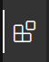
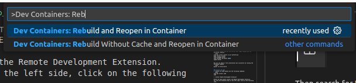

2. DEVELOPMENT ENVIRONMENT SETUP
Contents
Install VS Code and docker
Fetch workshop repository and sources
Launch Development environment in Docker container
2.1. 1. Install VS Code and Docker
The workshop will be conducted using Visual Studio Code and Docker Containers. The ROS2 code used in the workshop will run in a docker container.
2.1.1. Install Docker
To install docker and set the correct user rights please use the following commands.
sudo apt install docker.io git python3-pip
pip3 install vcstool
echo export PATH=$HOME/.local/bin:$PATH >> ~/.bashrc
source ~/.bashrc
sudo groupadd docker
sudo usermod -aG docker $USER
newgrp docker
Now you can check if the installation was successful by running the following command.
docker run hello-world
You might need to start the Docker Daemon first, if you cannot run hello-world out of the box:
sudo systemctl start docker
2.1.2. Install VS Code
To install VS Code please use the following commands:
sudo apt update
sudo apt install software-properties-common apt-transport-https wget -y
wget -q https://packages.microsoft.com/keys/microsoft.asc -O- | sudo apt-key add -
sudo add-apt-repository "deb [arch=amd64] https://packages.microsoft.com/repos/vscode stable main"
sudo apt install code
You can run VS Code by typing code in a terminal.
Install Remote Development Extension
Within VS Code please install the Remote Development Extension. You find the extension menu on the left side, click on the following item.

Then search for Remote Development and click install.
Now you are all setup and we can create your workspace.
2.2. 2. Create a ROS2 workspace
A workspace is the folder structure that you use for development. We need to create a workspace for our workshop. To do so, please execute the following commands in a terminal.
cd ~/
mkdir ws_manipulation_workshop
cd ws_manipulation_workshop
mkdir build install log
Now we have setup the folder structure and we are ready to download the workshop repositories.
git clone https://github.com/ipa-cmh/ros2_manipulation_workshop.git src
cd src
vcs import --input manipulation_workshop.repos
Now your workspace is setup and we are ready to open the development environment.
2.3. 3. Open workspace in docker and VS Code
Open the src folder of your workspace in VS Code.
2.3.1. 1. Edit devcontainer.json for your environment.
For the Dev Container to function properly, we have to build it with the correct user. Therefore open .devcontainer/devcontainer.json
{
"name": "ROS2 Development Container",
"privileged": true,
"remoteUser": "xxx",
"build": {
"dockerfile": "DOCKERFILE",
"args": {
"USERNAME": "xxx"
}
},
"workspaceFolder": "/home/ws",
"workspaceMount": "source=${localWorkspaceFolder},target=/home/ws/src,type=bind",
"customizations": {
"vscode": {
"extensions":[
"ms-vscode.cpptools",
"ms-vscode.cpptools-themes",
"twxs.cmake",
"donjayamanne.python-extension-pack",
"eamodio.gitlens",
"ms-iot.vscode-ros"
]
}
},
"containerEnv": {
"DISPLAY": "unix:0",
"ROS_LOCALHOST_ONLY": "1",
"ROS_DOMAIN_ID": "42"
},
"runArgs": [
"--net=host"
],
"mounts": [
"source=/tmp/.X11-unix,target=/tmp/.X11-unix,type=bind,consistency=cached",
"source=${localWorkspaceFolder}/../build,target=/home/ws/build,type=bind",
"source=${localWorkspaceFolder}/../install,target=/home/ws/install,type=bind",
"source=${localWorkspaceFolder}/../log,target=/home/ws/log,type=bind"
],
"postCreateCommand": "sudo rosdep update && sudo rosdep install --from-paths src --ignore-src -y && sudo chown -R xxx /home/ws/"
}
Use Ctrl+F to open the search and replace menu. Search for xxx and replace with your Linux username. If you do not know your username, you can find it by running echo $USERNAME in the terminal.
2.3.2. 2. Build Development Container
Use View->Command Pallette... or Ctrl+Shift+P to open the command pallette. Search for command Dev Containers: Rebuild and Reopen in Container. This should look like this.

Now click on the command. This will build your development docker container for your. This will take a while. Sit back or get a coffee.
2.3.3. 3. Test Container
To test if everything works correctly, open a terminal in the container using Terminal->New Terminalin VS Code. Inside the terminal do the following:
source /opt/ros/humble/setup.bash
rviz2
This should open an empty rviz2 window.